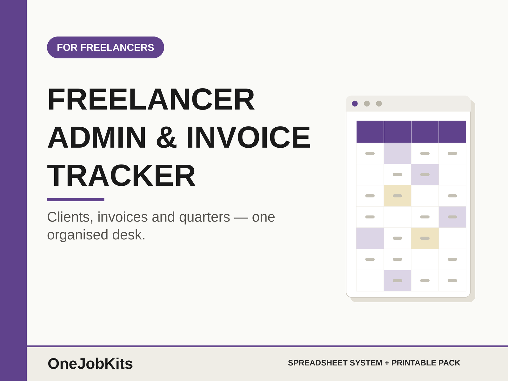

OneJobKits · Kit #26
Freelancer Admin & Invoice Tracker — freelancer invoice tracker spreadsheet

Freelance work is rarely the problem. Freelance admin is: the client list lives in your inbox, the agreed fee for a project lives in a message thread, an invoice sits half-remembered as probably paid, and at quarter end the question of what you actually earned becomes an evening of searching. A proper freelancer invoice tracker spreadsheet fixes the centre of that — one log where every invoice carries its status and the totals keep themselves.
This page gives you one month of that log free: the Invoice Log Starter. Below it is the full system it comes from — clients, projects, invoices, income, expenses, renewals and a quarterly summary the workbook builds from your own entries. It is an organiser and a records tool only. It records your numbers in your words and does the sums; it gives no tax, accounting or legal advice, and its quarterly summary is a summary of your entries, not a tax return.
Free download — start with the Invoice Log Starter
The FREE Invoice Log Starter is a fillable PDF holding one month of invoices on 16 rows — the starter described on Gumroad as one month of invoices, fillable, 16 rows. Use it for the month you are in: client, invoice, amount and status on paper, so the habit of logging every invoice starts today instead of at quarter end, when the inbox archaeology usually begins.
Download the free Invoice Log Starter (PDF)Get it on Gumroad instead
What the free starter does not do: it holds one month, on paper, and it does not total a quarter, connect an invoice to its project and its agreed fee, or track the income and expenses around the invoices. The full system below does all of that in one workbook — and its Quarterly Summary rebuilds itself from the logs every time you change the year cell.
What's inside the full system
- Admin workbook (spreadsheet, 8 tabs; Excel + Google Sheets, no macros) — Start Here · Clients — your client list with automatic counts, so the active book is a number, not a guess · Projects — each project with its agreed fee written down, and totals that calculate · Invoice Log — every invoice with Paid or Outstanding status; the invoiced, paid and outstanding totals keep themselves · Income Tracker — money in, dated and sourced · Expense Tracker — money out, in your own categories, because the labels that help you find a record again are yours · Contracts and Renewals — agreements and the dates they renew or expire · Quarterly Summary — built from the logs and driven by one Year cell: invoiced, paid and outstanding by quarter, income and expenses by quarter, and the year net
- Printable Freelancer Pack (fillable PDF, 7 pages, 587 fields) — the paper desk: monthly snapshot, invoice log pages, income and expense log, client and project tracker, quarterly summary worksheet, and contracts and renewal dates
- Worked example files (Excel + Google Sheets) — the workbook filled in with a fictional freelancer's full year, so every tab can be seen working before you enter a real client (shown below)
- Setup Guide (PDF, 6 pages) — what is inside, setup for Excel and for Google Sheets, a tab-by-tab walkthrough, a tour of the worked example, the Pro workbook, and the weekly, monthly and quarterly rhythm that keeps the system current
- Pro ($59) adds: the Client Pipeline and Rate Card workbook pair (Excel + Google Sheets) — Client Pipeline (30 rows, with per-stage counts and value and an open-pipeline total), Rate Card (20 service rows plus a quick quote helper that multiplies units by rate) and a Follow-Up Log (50 rows, so chasing a reply becomes a list instead of a worry)
A filled example — so you can see the finished thing
The kit's worked example follows a fictional freelancer, Maya Chen, a brand designer, through a full year. Maya is invented, and the example file says so; what the file demonstrates is the admin holding together across a real year's worth of clients, projects and invoices:
| From the example file | What is filled in |
|---|---|
| Clients and projects | 6 clients on the Clients tab and 12 projects on the Projects tab, each project carrying the fee that was agreed before the work started |
| Invoice Log | 12 invoices: 9,990 dollars invoiced, 7,930 dollars paid and 2,060 dollars outstanding — the three totals the log keeps by itself from the Paid and Outstanding statuses |
| Income and expenses | 9 income rows matching the paid work, and 12 expense rows totalling 748.45 dollars, recorded in Maya's own categories |
| Agreements | 4 agreements on Contracts and Renewals, with their dates where the renewal reminders belong |
| Quarterly Summary and year net | The quarters built from the logs by the one Year cell, ending in a year net of 7,181.55 dollars — income minus the expenses she recorded, and nothing else claimed |
That is the shape of a freelance year run on one desk: the fee agreed at the start, the invoice tracked to paid, and the quarter already summarised when somebody asks for it.
Who it is for
Freelancers and solopreneurs who invoice several clients, juggle several projects at once, and want to know — at any moment, without an inbox search — what has been invoiced, what has been paid, what is still outstanding, and what the quarter looks like so far.
Who it is not for
Anyone looking for tax advice, accounting advice, legal advice, help deciding what is deductible, or a substitute for an accountant or a bookkeeper. There is none in here, on purpose. This kit keeps clean records in your own words; a qualified professional turns records into filings and advice.
Questions buyers ask
- Is the Quarterly Summary a tax return?
- No. The Quarterly Summary is a summary of your own entries, built from your Invoice Log, Income Tracker and Expense Tracker and driven by one Year cell. It shows invoiced, paid and outstanding by quarter, income and expenses by quarter, and the year net. It is not a tax return, not a set of accounts, and not tax advice — hand the clean summary to your accountant and let them do the filing.
- How do the invoice totals keep themselves?
- Each invoice on the Invoice Log carries a Paid or Outstanding status. The sheet sums what you invoiced, sums the invoices marked Paid, and shows the difference as outstanding — automatically, every time a status changes. In the worked example that reads 9,990 dollars invoiced, 7,930 dollars paid and 2,060 dollars outstanding across 12 invoices.
- How are expenses categorised?
- In your own categories. The Expense Tracker has a category column that is explicitly your own label, written for one purpose: finding the record again later. The kit offers no deductions guidance and makes no claim about what any expense means for tax — that judgement belongs to you and your accountant.
- Excel or Google Sheets, and are there macros?
- Both. The workbook comes as an Excel file and as a Google Sheets version with the same 8 tabs and the same formulas, and there are no macros in either version. The printable pack is a fillable PDF for the paper side of the desk.
- What does Pro add?
- Pro adds the Client Pipeline and Rate Card workbook pair, in Excel and Google Sheets: a Client Pipeline with 30 rows and per-stage counts, per-stage value and an open-pipeline total; a Rate Card with 20 service rows plus a quick quote helper; and a Follow-Up Log with 50 rows for the replies you are waiting on.
- Can it track renewals and agreements as well as invoices?
- Yes. The Contracts and Renewals tab holds your agreements and their renewal or expiry dates alongside the client and project records — 4 agreements are filled in across the worked example — so the date a contract needs attention stops living only in a calendar reminder or a message thread.
- What does the free starter cover, and what does the full system add?
- The free Invoice Log Starter is a fillable PDF holding one month of invoices on 16 rows. The full system holds every month in one workbook: clients with automatic counts, projects with agreed fees, the self-totalling invoice log, income and expense trackers, contracts and renewals, and a quarterly summary built from those logs — plus the 7-page printable pack and the setup guide.
Prices
Base: $39 · Pro (adds the Client Pipeline and Rate Card workbook pair): $59 — one-time payment, digital download. No subscription; the files are yours.
Can't find the kit you need?
We build it. Ask us — first asker gets it at half the shelf price. Tell us the job at onejobkits.com and we will build the kit for it.
Related kits
Please know: this is an organiser and records tool only — not tax, accounting or legal advice. The Quarterly Summary is a summary of your own entries, not a tax return and not a set of accounts, and the Expense Tracker categories are your own labels for finding records again. Take tax, accounting and contract questions to qualified professionals. All example data is fictional (Maya Chen is invented, and the example file says so).